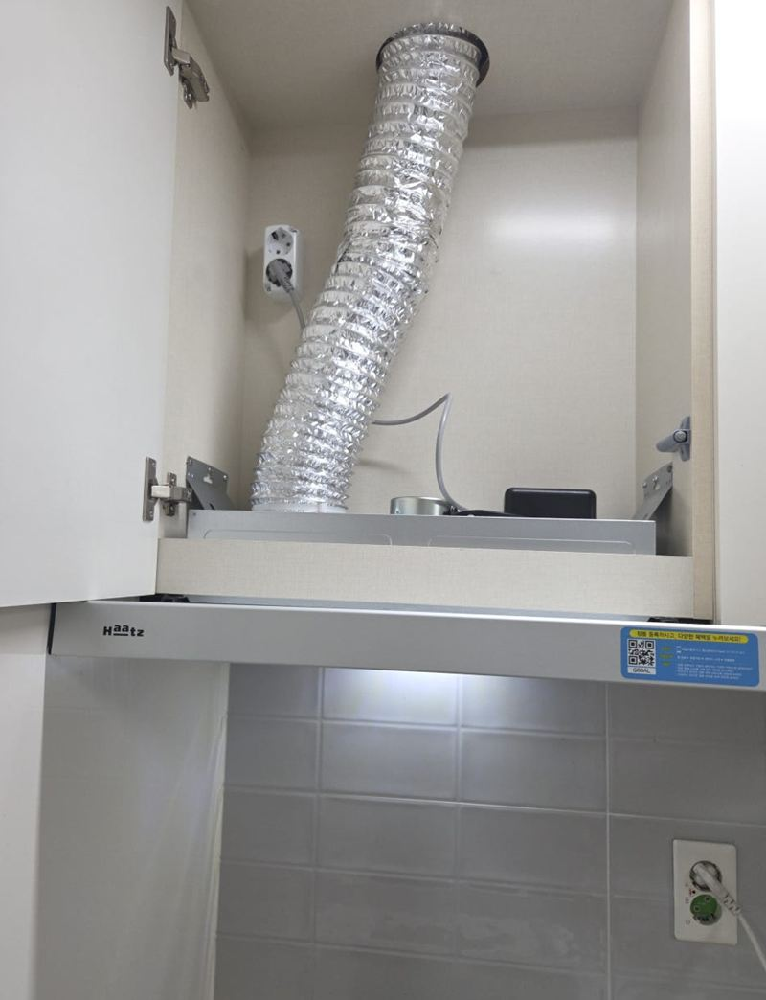
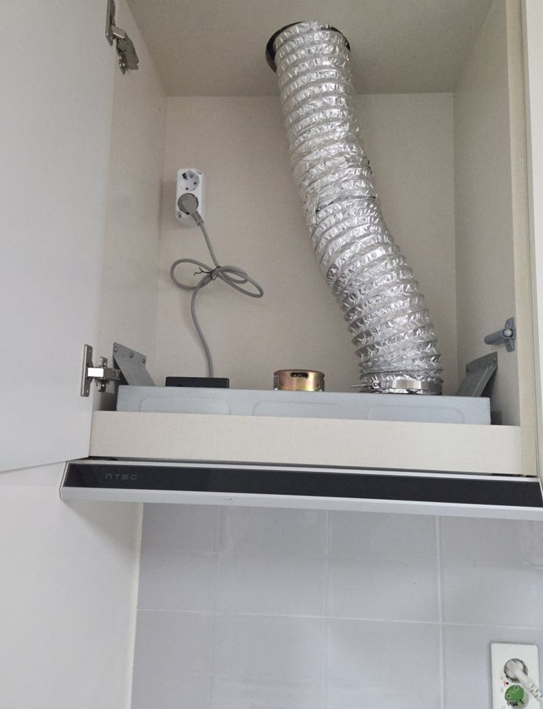
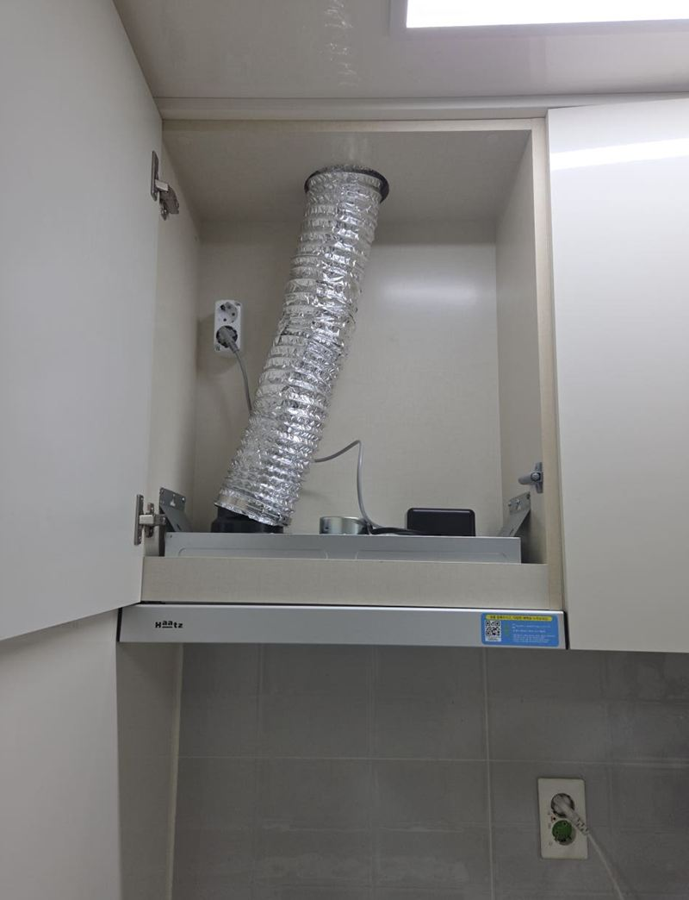
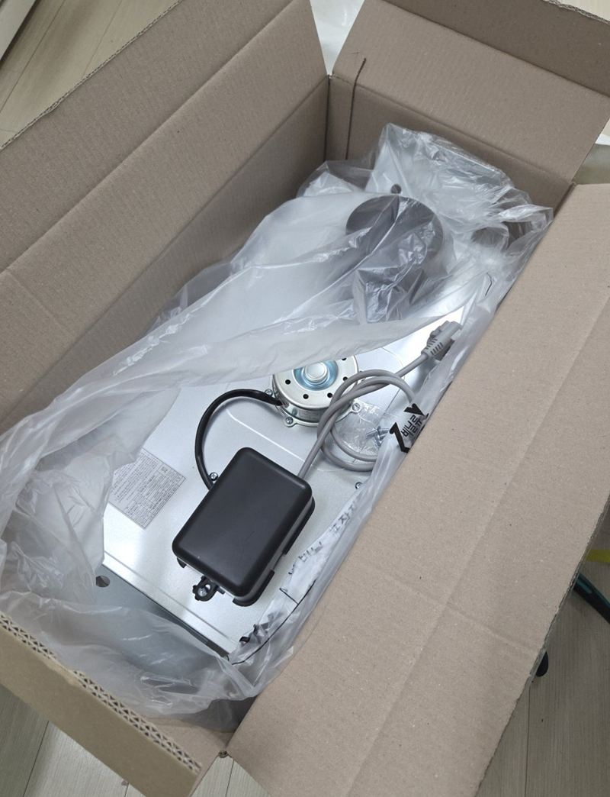
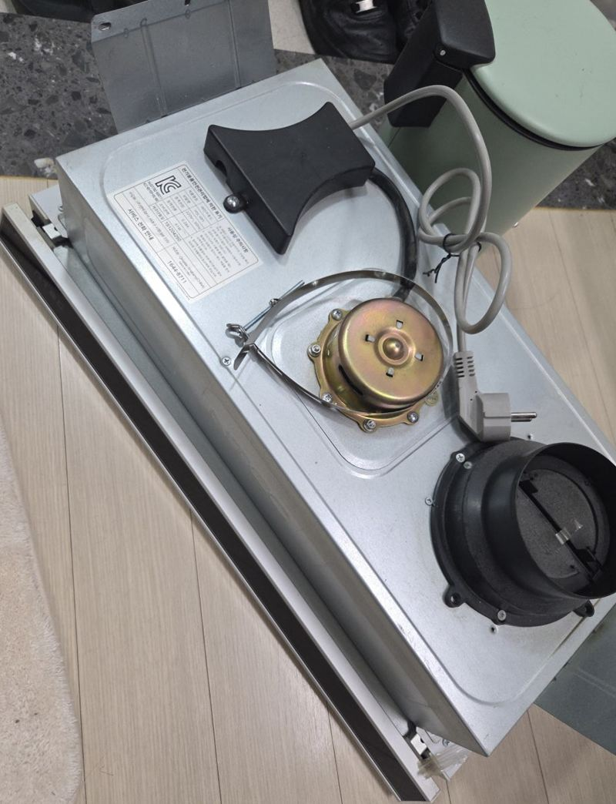
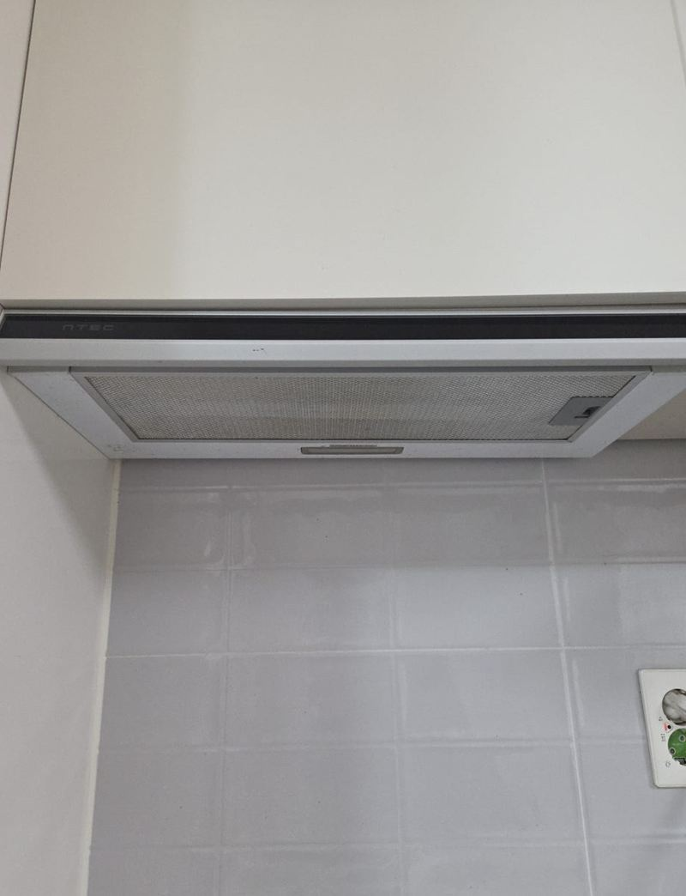
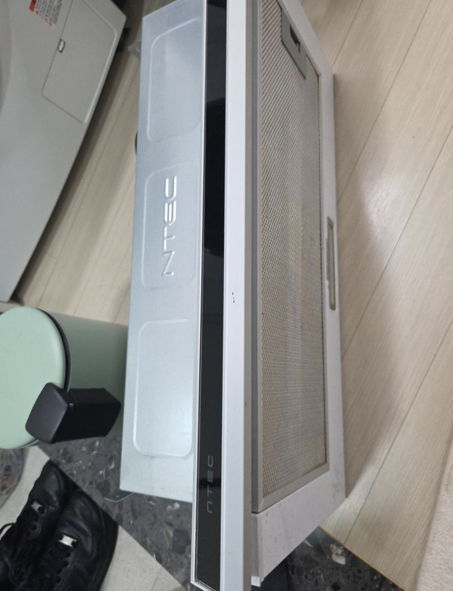

남양주 후드 자바라 냄새 안 빠질 때 해결 방법

 교체 전교체 후
교체 전교체 후← 밀어서 전후 비교 →
"후드 조명만 들어오고 켜지질 않아요. 세입자분이 살고 계셔서 빨리 바꿔야 해요." 남양주 다산동 오피스텔을 관리하시는 분의 연락이었어요. 가 보니 불은 정상인데 모터가 전혀 돌지 않아, 요리 연기와 냄새가 그대로 방 안에 남고 있었어요. 상부장이 다치지 않게 옛 후드를 떼고 같은 600 규격 슬라이딩 후드로 바꾸면서, 자바라 길이와 연결부까지 다시 맞췄어요.
| 현장 | 남양주 다산동 오피스텔 주방 |
|---|---|
| 증상 | 조명은 켜지나 모터 미작동, 연기·냄새 배출 안 됨 |
| 한 일 | 상태 확인 → 기존 후드 탈착 → 자바라 길이·연결 점검 → 같은 규격 후드 설치·연결 조정 → 흡입·연기 테스트 → 폐후드 수거 |
| 제품 | 기존과 같은 600 사이즈 슬라이딩 후드 |
불은 켜지는데 냄새가 안 빠지는 이유
후드 조명과 모터는 따로 움직여요. 그래서 불이 켜진다고 전원이 다 멀쩡한 건 아니에요. 이번처럼 모터가 고장 나면 공기를 빨아들이지 못해 아무리 켜 둬도 냄새가 그대로예요. 모터는 도는데 냄새가 남는다면 자바라가 빠졌거나 꺾여 있는 경우가 많아요.
| 증상 | 먼저 의심할 곳 |
|---|---|
| 조명만 켜지고 소리 없음 | 모터·스위치 고장 |
| 소리는 나는데 냄새 남음 | 자바라 빠짐·꺾임·길이 부족 |
| 후드를 바꿨는데도 냄새 | 자바라와 배기구 연결 |


자바라를 같이 봐야 하는 이유
자바라는 후드가 빨아들인 공기를 배기구까지 보내는 통로예요. 길이가 모자라 팽팽하게 당겨져 있거나, 너무 길어 중간이 처져 꺾이면 공기가 막혀요. 연결부가 느슨하면 냄새가 상부장 안으로 새요. 이 상태로는 새 후드를 달아도 같은 불편이 반복돼요.
그래서 옛 후드를 뗄 때 자바라 길이와 연결 방식을 먼저 확인하고, 새 후드를 달면서 소켓을 연장하거나 연결 방법을 조정했어요.


교체 후 꼭 확인한 것
- 조명밝기와 스위치 작동을 확인해요.
- 흡입력단계별로 바람이 제대로 들어가는지 봐요.
- 자바라 연결부꺾이거나 빠진 데가 없는지 상부장 안을 확인해요.
- 실제 연기연기를 피워 위로 빨려 올라가는지 직접 봐요.


확인 결과 연기와 냄새가 정상적으로 빠졌고, 떼어 낸 옛 후드는 가져가 처리했어요. 세입자가 사는 집이라 불편한 기간이 짧았던 점을 관리하시는 분이 좋아하셨어요.
이럴 땐 교체를 생각해 보세요
- 조명만 켜지고 모터가 안 돌아요이번 현장처럼 모터·스위치 고장이 많고, 오래된 제품은 교체가 빨라요.
- 소리가 커지고 흔들려요모터 축이나 팬이 닳은 신호예요.
- 필터를 닦아도 기름이 떨어져요본체 안쪽까지 기름이 찬 경우라 청소보다 교체가 나을 수 있어요.
- 세입자 민원이 급해요같은 규격 제품이면 상부장을 손대지 않고 짧게 끝낼 수 있어요.
후드 냄새 질문
모터만 고칠 수는 없나요?
부품을 구할 수 있으면 가능해요. 오래된 제품은 부품이 없어 교체가 빠른 경우가 많아요.
후드 크기는 어떻게 고르나요?
기존 후드 폭과 상부장 칸 크기를 재요. 같은 규격이면 상부장을 손대지 않아도 돼요.
자바라만 바꿀 수도 있나요?
후드는 멀쩡한데 자바라가 찢어졌다면 자바라만 바꿔요.
윗집 냄새가 후드로 들어와요.
역류 방지 댐퍼 상태를 봐야 해요. 배기구 쪽 문제일 수 있어요.
필터는 얼마나 자주 닦나요?
기름때가 끼면 흡입이 약해져요. 자주 요리한다면 한 달에 한 번쯤 닦아 주세요.
집주인 대신 관리인이 불러도 되나요?
네, 관리하시는 분이 연락하고 세입자분이 문을 열어 주는 경우도 많아요.
상부장 문이 같이 붙은 후드예요.
슬라이딩 후드는 상부장 문과 연결된 경우가 많아, 문 상태까지 보고 떼요.
자바라 냄새가 상부장 안에 배었어요.
연결부가 새고 있었다는 뜻이라 연결을 다시 잡고 안쪽을 닦아요.
다른 후드 현장
후드 정면과 상부장 안 자바라 사진을 보내 주세요.
전화 상담 010-4517-9872